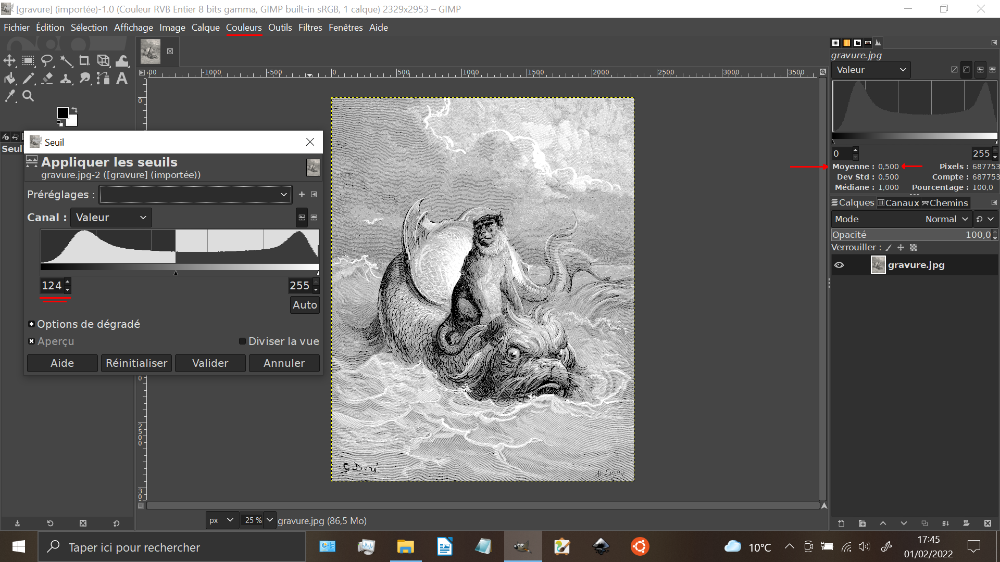
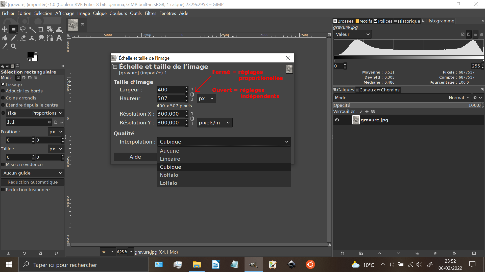
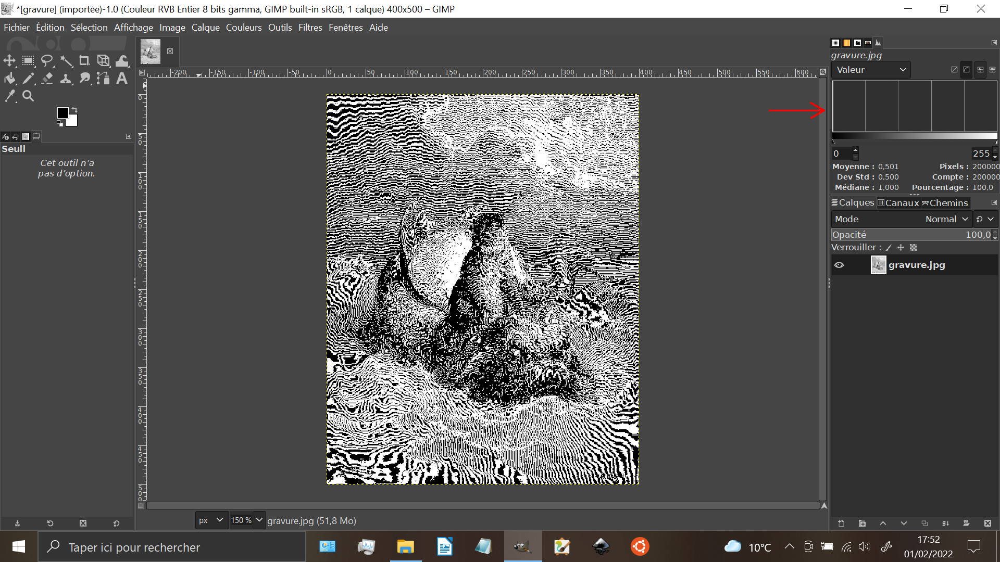
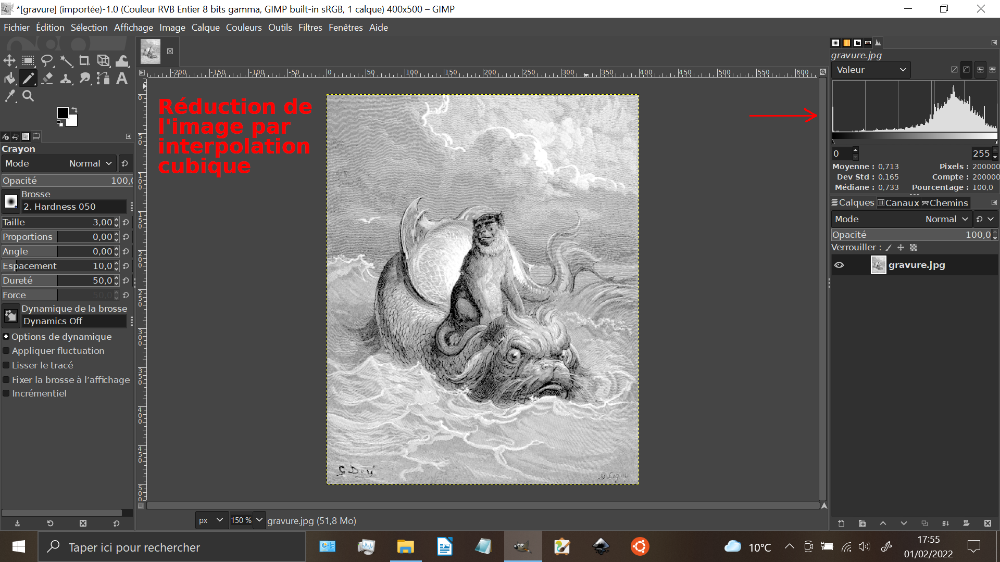
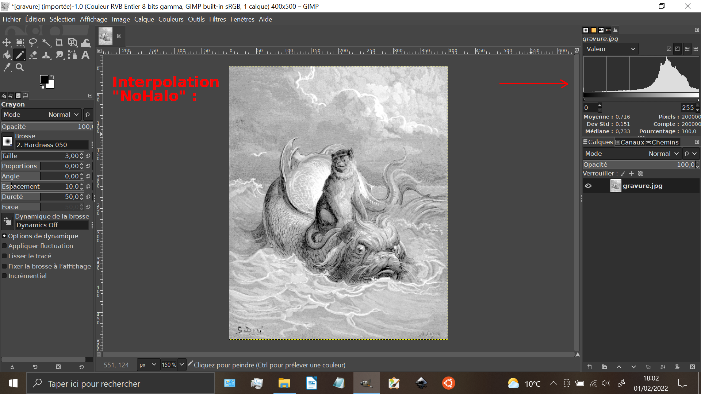
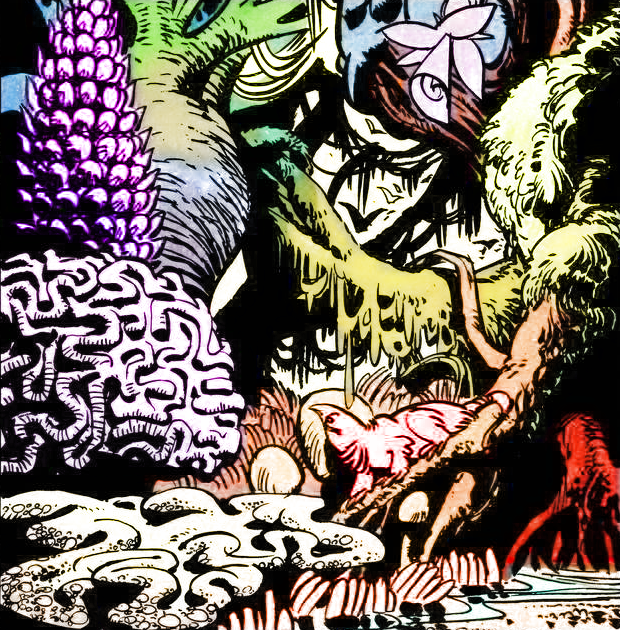
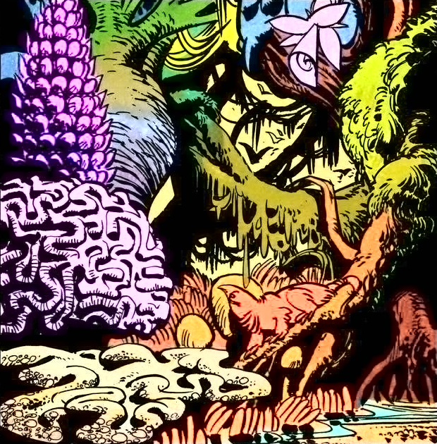
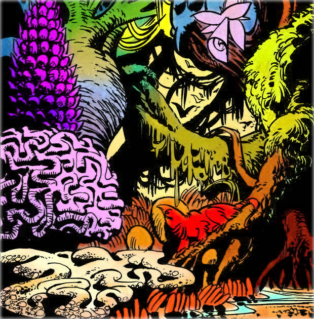
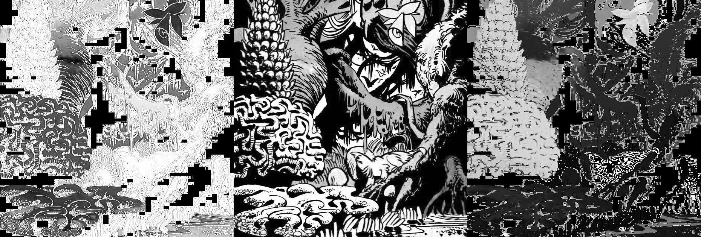
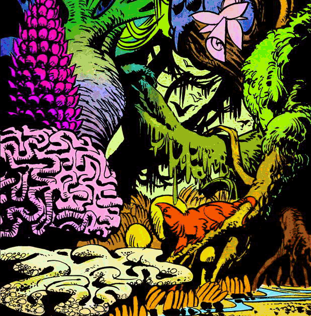

Auteur : Lâmân Lelégard
Date : 13-14-19 janvier 2022
Sujet : petit rappel de certaines manipulations d'images vues en cours...
Le TP commence avec une manipulation "simple" : l'ouverture de cette image
(une gravure de Gustave Doré représentant un singe chevauchant un poisson-chien dauphin). Pour cela, deux possibilités :
lancer GIMP et Fichier > Ouvrir (le raccourci Ctrl+O marche aussi) ou bien cliquer-droit sur le fichier image et
Ouvrir avec > GIMP. Normalement, par défaut, lors de la première utilisation de GIMP, la fenêtre d'histogramme n'est pas
affichée. Pour cela : Fenêtre > Fenêtre ancrable > Histogramme. Petit rappel : un histogramme est un courbe qui
donne en ordonnée le nombre de pixels ayant une valeur x (x entre 0 et 255, en abscisse). Un histogramme normalisé, c'est le même
chose mais divisé par le nombre de pixels total : on l'interprètera alors comme une "densité de probabilité" (un pixel à une chance
Hn(x) de valoir x ou Hn est l'histogramme normalisé).
La première manipulation proposée est un seuillage de l'image, ce qui correspond à un passage de 256 niveaux (8 bits) à deux
niveaux (1 bit). Dans la capture d'écran ci-dessous, le seuil (souvent fixé par défaut à 128 ou 127) a été choisi de telle sorte
à obtenir un histogramme avec 50% de pixels noirs et 50% de pixels blancs :

On va maintenant faire quelque chose de faussement simple : réduire la taille de l'image à une taille de 400 pixels de large sur
500 pixels de haut. Pour cela il faut aller dans Image > Échelle et taille de l'image… et remplir les valeurs désirées en
prenant soint de décocher le facteur de proportionnalité entre les valeurs :

On va ensuite réduire cette gravure en testant les cinq modes proposés, ici seulement trois seront considérés :

L'absence d'interpolation (interpolation par plus proche voisin en fait) donne une image avec des artéfacts de moiré dus à un
phénomène appelé "aliasing" (ou "repliement de spectre" en français) liée aux hautes fréquences (i.e. les hachures) de la gravure.
Les valeurs binaires sont conservées (cf. histogramme). Le rendu final est peu esthétique pour ne pas dire carrément illisble.
C'est pourquoi, ont serait tenté de tester une interpolation bilinéaire ou bicubique pour la suite :

Bien que le résultat soit plus lisible, un léger effet de moiré persiste (encore dû à l'aliasing) et on notera au passage que
l'histogramme a vue apparaître de nouvelles valeurs de gris. Pour ceux qui veulent en savoir un peu plus, je peux accessoirement
les inviter à jeter un oeil sur les cours d'interpolation 2D que je donne au PPMD :
"diapos" -
"bonus" (à compléter) - Enfin, les interpolations de
type NoHalo et LoHalo donnent des résultats nettement plus intéressant :

Les effets de moiré ont totalement disparu et l'histogramme semble plus "régulier" que pour les interpolations bilinéaires et
bicubiques. Sans rentrer dans le détail, cette méthode découle des travaux de
Nicolas Rebidoux et font appel à des notions de
traitement d'images d'un niveau plutôt averti dans le domaine du resampling (ou "rééchatillonnage" en français).
En voulant tenter de faire une capture vidéo de la manipulation de "fabrication" d'une étoile de Siemens (ou "mire rayonnante" si on n'aime pas retenir les noms propres), je me suis rendu compte que toutes les fenêtres ne s'affichaient pas, rendant ainsi ma vidéo incompréhensible. Je vais donc essayer de résumer ce qu'on a vu de manière télégraphique :
Le motif de la mire rayonnante a des propriétés assez intéressantes pour détérminer le type de flou ainsi que son orientation.
Elle est par exemple utilisée pour vérifier la qualité d'une optique lors des test d'étalonnage de caméra. La vidéo ci dessous
illustre le comportement de la mire en fonction du flou :
| https://youtu.be/pN6HAnc4gdE |
| https://youtu.be/8BNO0g9b6QA |
La manip' correspondant à une animation GIF sera peut-être complétée plus tard (mais elle est facile à retrouver par soi-même).
L'idée du "pansharpening" serait de fusionner une image panchromatique (en niveaux de gris) haute-résolution avec une image
couleur basse résolution. Dans notre example, on ouvrira d'abord jungle_val.png
puis Fichier > Ouvrir en tant que calque jungle2.png qui ne fait que 62*63
pixels et est donc 10 fois plus petite que l'image en niveau de gris. Après avoir agrandi le calque "jungle2.png" avec l'outil
de mise à l'échelle (Maj+S) et recalé le calque avec l'outil déplacement (M) -en verifiant que "Déplacer le calque actif" est
bien coché- il ne reste plus qu'à fusionner les deux calques : mais quel mode choisir. Voici ci-dessous trois exemples :



À gauche le calque "jungle2.png" est en mode "Couleur TSL" et au centre en mode "Couleur LCh" tandis que le calque de fond
reste en mode "Normal". Remarque : le resultat semble différer -colorimétriquement parlant- de "jungle2.png". Cela est dû au
fait qu'on ne s'est pas placé dans le bon espace de couleur dans ces deux premiers cas car "jungle_val.png" ne correspond ni
à une luminance, ni à une luminosité mais à une valeur. Pour faire simple, il existe plusieur manière d'obtenir un image en
niveaux de gris et celle dont on dispose représente une "valeur" (i.e. le max de R,V,B). On notera au passage que la commande
de passage en niveaux de gris Couleur > Désaturer propose 5 modes différents (Luma, Luminosité, Luminance, Moyenne, Value).
La (bonne) solution donnée à droite et de mettre le calque "jungle2.png" en arrière-plan en mode "normal" et "jungle_val.png" au
premier plan avec le mode "Valeur HSV".
J'en profite pour ajouter une remarque personnelle concernant la définition de l'espace HSV (Hue-Saturation-Value) ou TSV en
français, pour cela je vous propose d'examiner la décompostion de l'image considérée (qui pour anecdote est une illustration
de Jean-Claude Mézières, disparu il y a peu) :


Au centre, c'est la "valeur" (i.e. le max des canaux RVB) et, à gauche, la saturation égale à "1-min/max" ce qui pose problème
pour les pixels noirs (0,0,0) qui dont la saturation vaut par convention 0 (par prolongement sur l'axe des gris où R=V=B) mais
est selon moi contre-intuitif avec le fait que les pixel presque noir (0,0,1) (0,1,0) (1,2,0) etc auront pour saturation 1 d'où
les discontinuités dans le canal "saturation". Pour le canal "teinte", à droite, il faut l'interpréter comme un angle où 0° et
360° correspondent à la teinte rouge. Le caractère cyclique de la teinte est illustrée par la petite animation GIF tout à droite
(obtenue avec GIMP en dupliquant 17 fois le calque et en faisant varier la teinte de 20° entre chaque images avec Couleurs >
Teinte-Saturation puis en exportant sous la forme d'un fichier GIF en cochant "en tant qu'animation" et "boucler
indéfinement"). C'est joli, non ?
PARTIES À COMPLÉTER :
Lien intéressant sur les modes de fusion de calque :
https://docs.gimp.org/2.10/fr/gimp-concepts-layer-modes.html